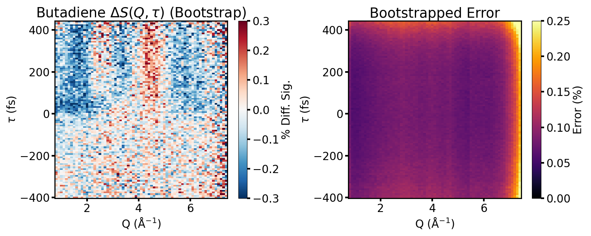

Full-Field Experimental Surface

- Bootstrapped $\Delta S(Q, \tau)$ (left) over the full measured window, $-400$ to $+400$ fs, together with its bootstrapped statistical error (right)
- Error stays below $\sim$5% across the bulk of $Q$-space for all delays, rising only near the detector edge ($Q \gtrsim 7$ Å$^{-1}$)
- Statistics are good enough to resolve the sub-100 fs onset of the excited-state signal, motivating the finer time binning used in the decomposition that follows